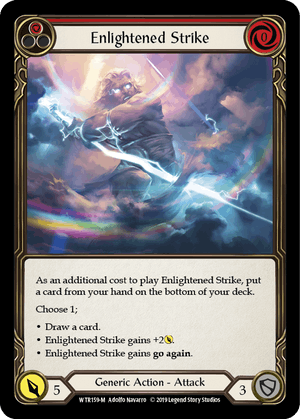
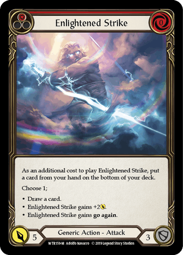
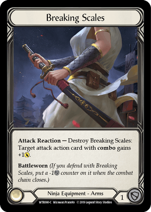
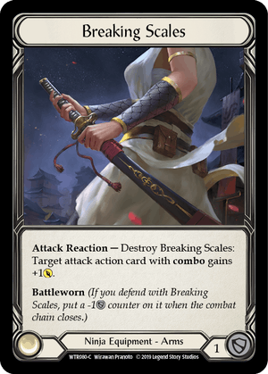

This is a typical play mat that is used during the game. Play mats aren't necessary for the game, but knowing where to place your cards is required. I will describe each field on the play mat and how they are used to play the game.
Flesh and Blood may seem hard to understand, but after you learn the rules the game is easy to learn. Please read through each part of the game to get an idea of how the game is played. At the bottom there is a YouTube video that will also teach you how to play.
This is a typical play mat that is used during the game. Play mats aren't necessary for the game, but knowing where to place your cards is required. I will describe each field on the play mat and how they are used to play the game.
The Character card is placed on the mat in the character field. You first start the game by choosing your character, your character will be certain type of hero. Above we have Ira which is a ninja, so she can only use ninja/generic weapons, play ninja/generic cards, and wear ninja/generic armor. On the bottom left we see amount of cards we can have in our hand and the bottom right shows the amount of your life points. Each character has a special ability that can be activated every turn if you choose too.
 
These cards are action cards and they are played from your hand. In the bottom left you can see attack power and bottom right the defense power. Top left shows the resources that your card provides and top right shows the cost of resources to play the card. In order to play the card from your hand you have to pitch the required amount of resources, you will place a card from your hand into the pitch zone. The amount of resources the card will give is also shown on the top line; blue for three, yellow for two, and red for one.
Weapons stay on the play mat through out the game. You can use your weapon once per turn, unless stated otherwise. To the right of the weapon name we see if it is one handed or two handed. You are able to carry two one handed weapons for your hero. The red dots on the card is the resource cost of the weapon, and each weapon will have an ability attached too it.
 
Armor stays on the play mat through out the game unless you use armor to block and it says blade break. Most armor have abilities that you can activate once or multiple times through the game. Some have no abilities and are only used to block attacks, but if the armor has blade break the armor can be used to block once. The armor you will have 4 armor pieces that cover the head, chest, arms, and legs.
A turn consists of 5 parts; attack, defense, attack reactions, defense reactions, arsenal. Lets say Player 1 is attacking, Player 2 has to defend with cards from their hand or armor. Player 2 defends with 2 of their cards. Once the attack is over all cards used go to the graveyard (except weapons and some armor). The attacking player draws cards until they have 4, the defending player does not draw and starts their attack with the amount of cards they have left after defending. Player 2 has two cards left to attack with, in order to play their action card they have to pay the pitch cost. Player 2 is only able to play one action card because they used too many to defend with. Player two can also use their weapon instead of the action card or play both if they have enough pitch. You can only attack with two cards if one of the cards you played says "go again". Attack reactions are played after the defending hero defends, attack reactions usually boost the damage of your attack. Defense reactions are played to defend against attack reactions, the only thing that can block attack reactions are defense reactions and armor. On the first turn both players draw 4 cards in to their hand and then players decide you goes first. After the first turn both players draw until they both have 4 cards in their hand. You win by taking away all the life points of the opposing player. And if you run out of cards then you lose the game.